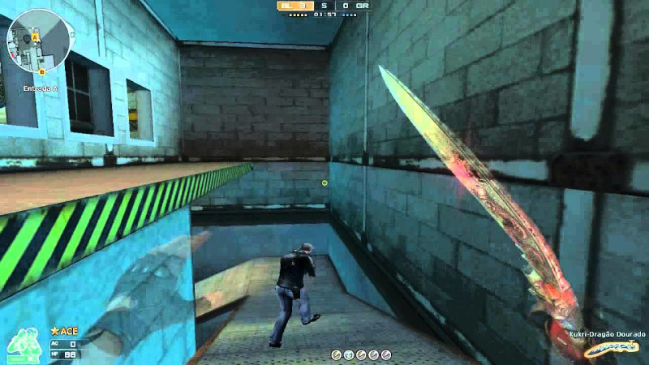
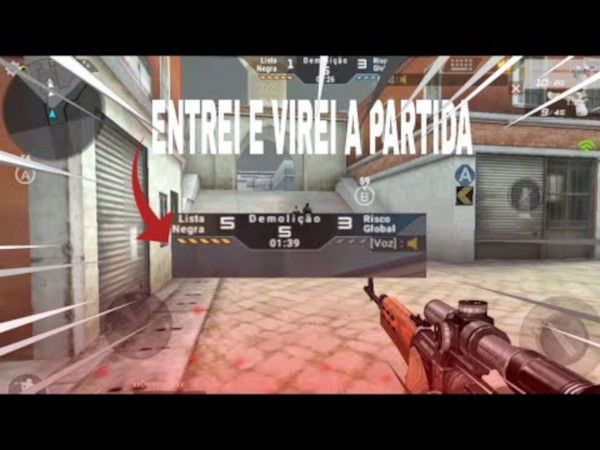
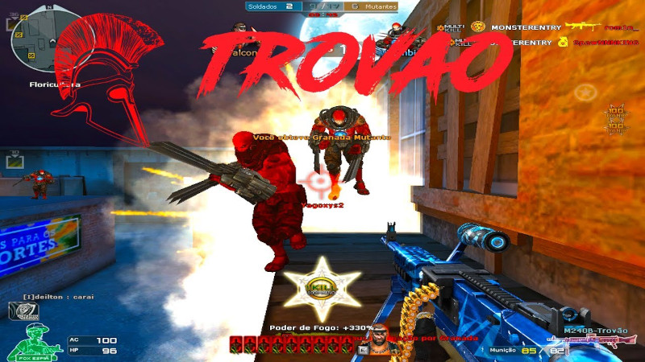
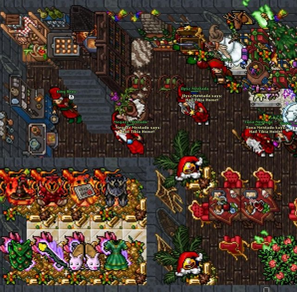
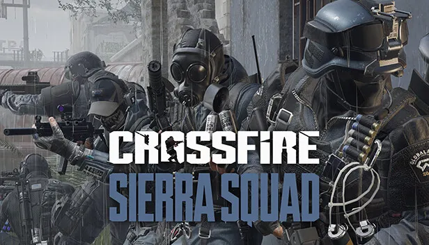
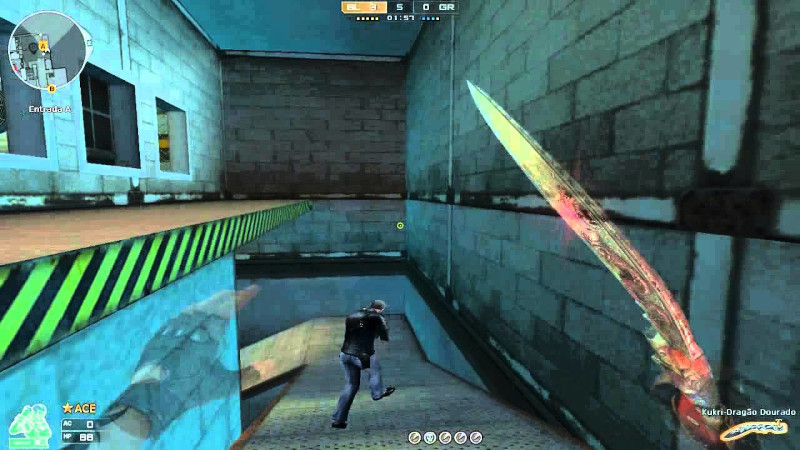
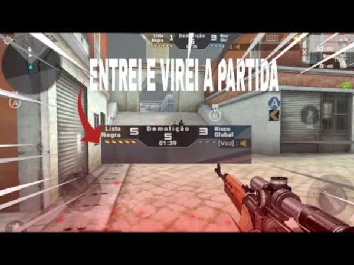
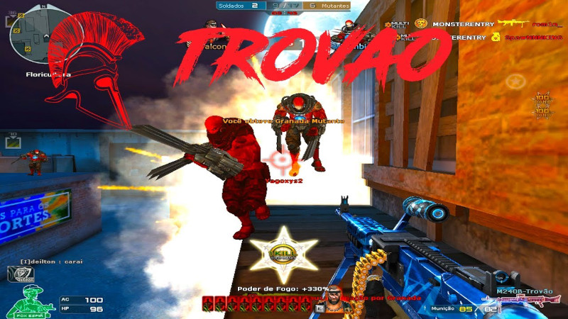

Tinhamos modos como:
Modo Fantasma

Mata-Mata Em Equipe

Cada 1 por Si

Modo Demolição

Modo Mutante

Como primeiro jogo de computador onde tive contato, o tibia é um jogo de MMORPG (Massive Multiplayer Online Role Playing Game)
Tibia é um jogo eletrônico de RPG multijogador (MMORPG) gratuito, desenvolvido pela CipSoft. Criado em 1997, é um dos jogos mais antigos do gênero. Nele, os jogadores podem desenvolver as habilidades de seus personagens, buscar tesouros, resolver enigmas e explorar áreas como cidades, masmorras, florestas, desertos, ilhas, praias, minas, etc.[6] Os personagens podem disputar lutas entre si ou com criaturas,[7] tais como monstros, dragões, demônios, orcs, utilizando armas e magias, enquanto os NPCs não podem ser atacados.[8]
Você pode acessar o site do TIBIA clicando aqui

- Diversão garantida
- Multiplos jogadores
- Totalmente online
- 50% Free-To-Play
- Faça novos amigos
- Com certeza fará, e vai precisar 😊
Crossfire é um jogo de FPS (First Person Shooter ou Tiro em Primeira Pessoa) O Jogo é totalmente online onde você enfrenta diversos jogadores em tempo real, pode se comunicar com eles em tempo real também, Crossfire ja foi muito famoso em meados dos anos 2012-2019. Infelizmente perdeu sua popularidade por conta do alto nivel de HACK's ou Cheater's existentes e que só subiram cada vez mais. Mas em caso de curiosidade, você pode estar acessando o site
clicando aqui

Tinhamos modos como:
Modo Fantasma

Mata-Mata Em Equipe
Cada 1 por Si
Modo Demolição

Modo Mutante

Próxima Página